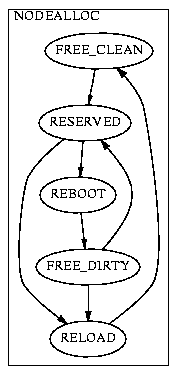

The node boot process shows the legal state transitions a node may make during its cycle of rebooting. The NORMALv1 subgraph shows the normal boot cycle. If a node starts out off, it is in the SHUTDOWN state. When it is turned on, it moves to the BOOTING state, where it contacts the Emulab server and gets its boottime configuration information, and starts to load the operating system. In standard Emulab disk images, as part of the OS startup, certain testbed-specific scripts run, to perform node configuration. This is done during the TBSETUP state. When the node has finished initialization, it moves to the ISUP state. It may remain in this state indefinitely before it shuts down again and returns to the SHUTDOWN state to start the cycle over again. This machine is labeled NORMALv1 because there will be other, more detailed versions of the NORMAL machine that come in the near future, to better aid in error recovery.
The MINIMAL machine shows what a minimally compliant custom operating system image or kernal will do. Even an OS that doesn't support any external interaction can use the MINIMAL machine. Emulab software is responsable for seeing when nodes shut down and start booting, so in the worst case, the node will cycle between SHUTDOWN and BOOTING. If the custom OS supports ping replies, Emulab software will use ping to infer when the node has moved to the ISUP state. In this way, an OS without any Emulab-specific capabilities can comply with the state machine transitions properly.
A special case of the normal boot process is the disk reloading cycle. When we reload a disk, the node starts out in the SHUTDOWN state. It then proceeds through the BOOTING, RELOADSETUP, RELOADING, and RELOADDONE states as it performs the reloading tasks. This granularity gives us the ability to perform appropriate error recovery in a timely fashion while nodes are reloading.
The transitions shown between the different machines show how a node can move from one machine or mode to another. A node that has been shut down may be reconfigured to boot a different OS, so it may move from NORMALv1 to MINIMAL mode, or vice versa. It may also be reconfigured to reload its disk, and moves from NORMALv1 to RELOAD. When the reload has completed, it moves back to NORMALv1 again. These are called Mode Transitions, and they define relationships between machines that govern the same state data, in this case the node boot status data.
The experiment status state machine shows the states that an Emulab experiment may be in at any given time. Experiments always start as NEW experiments. During PRERUN, they are loaded into the database, and marked as SWAPPED, since they are currently swapped out. When an experiment swapin is attempted, it moves to ACTIVATING. From there it may find it cannot swap in, in which case it returns to SWAPPED. If it succeeds it moves to the ACTIVE state until the experiment is swapped out. It may also go to the TESTING state if it is running in test mode, a special mode used by Emulab developers to test the Emulab system itself. When it starts swapping out, the experiment moves to the SWAPPING state, followed by the SWAPPED state. Because it has returned to the SWAPPED state, it may proceed to activate again, or it may be terminated. When termination starts, it moves to the TERMINATING state, and then the TERMINATED state, where it may be safely removed from the Emulab database.
[Note: Some of the lower level details of this have changed, but the principle is still the same.]
The node allocation state machine also governs nodes, like the node boot process, but instead of their boot status, it governs their allocation status. A node that is not reserved and has a fresh copy of the Emulab standard disk images starts in the FREE_CLEAN state. When an experiment swaps in, it may reserve a node, and it moves to the RESERVED state. When the experiment has finished using the node, it may move to the REBOOT state, where it will be rebooted, to clear any experimental configuration, or the RELOAD state, to refresh the disk image to the standard version. If the node gets reloaded, it may move the the FREE_CLEAN state. If it simply reboots, it moves to the FREE_DIRTY state, meaning the disk may be "dirty", and not identical to the standard image. A node in the FREE_DIRTY state may then be reserved again, or may move to the RELOAD state prior to becoming a FREE_CLEAN node. (FREE_DIRTY nodes are typically only reserved by experiments in the same project as used them last.)
The user status state machine shows the states a user's account may be in at any given time. A user who applies for an account on Emulab starts out as a NEWUSER. When they perform the email address verification step, they become an UNAPPROVED user. When a project leader approves them as a member of their project, they become an ACTIVE user, and are granted the privileges that normal users have on Emulab. The actions they may perform depend on the access level they were granted for each project in which they are a member. At any time their account may be FROZEN, at which time their access is temporarily suspended. They may be returned to ACTIVE status after being FROZEN. A user account may safely be deleted in any state.